工程1の比較 — 造形ゲート未達
主幹と枝の連続性は改善しましたが、名木としての自然さ、木肌、葉群のまとまりは完成基準に届いていません。背景は空間配置の仮段階です。既存の09bestは置き換えていません。この文書は確認用の資料で、サイト本体には文字を表示しません。
完成像の参考と、現在の実3D
 外観基準の生成画像。実3Dの表示画像としては使用していません。
外観基準の生成画像。実3Dの表示画像としては使用していません。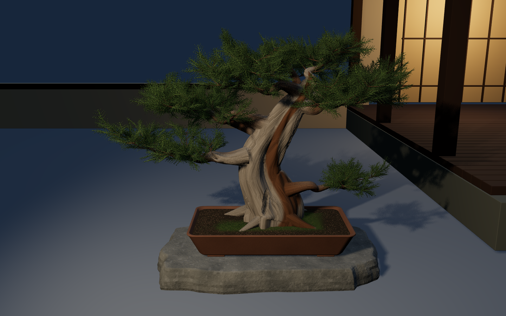
v27本番ビルド、1440×900。幹・葉・庭・建築は実際の3D。写真調の参考との差は大きく残っています。
単色での旧モデル比較
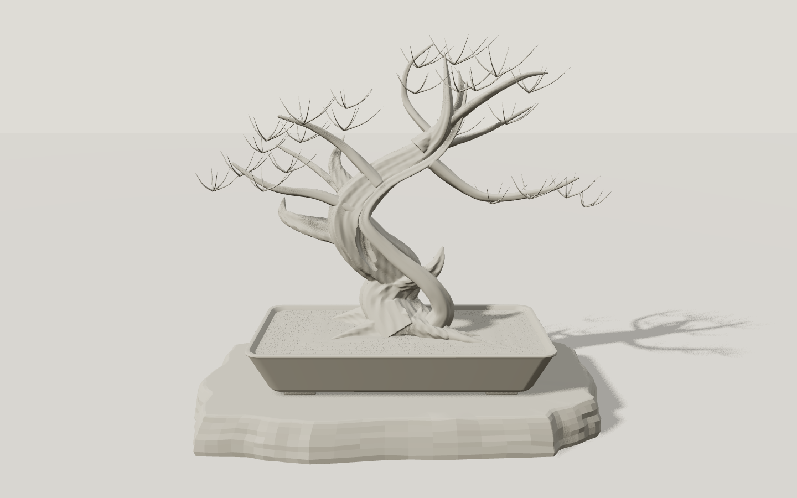
旧Blender案。別管の生き筋と細い帯状の幹が目立ちます。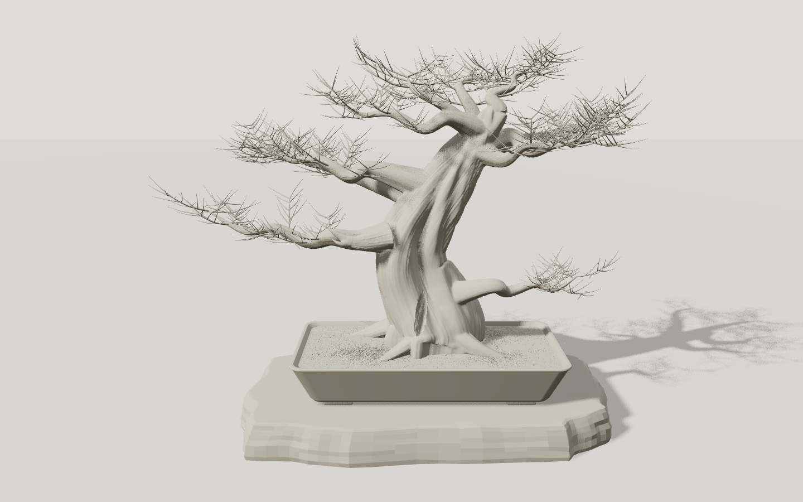
v27。連続した体積へ変更。面の流れが整いすぎており、板・帯を連想する部分が残ります。
同じ材質・照明・画角で、各モデルを画面へ自動フィットしています。輪郭の差に合わせてカメラ距離は個別に調整されます。
候補の正面と斜め
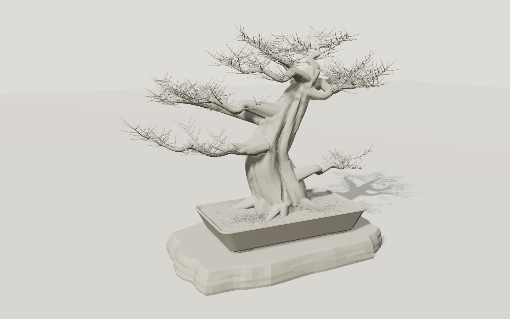
左25度正面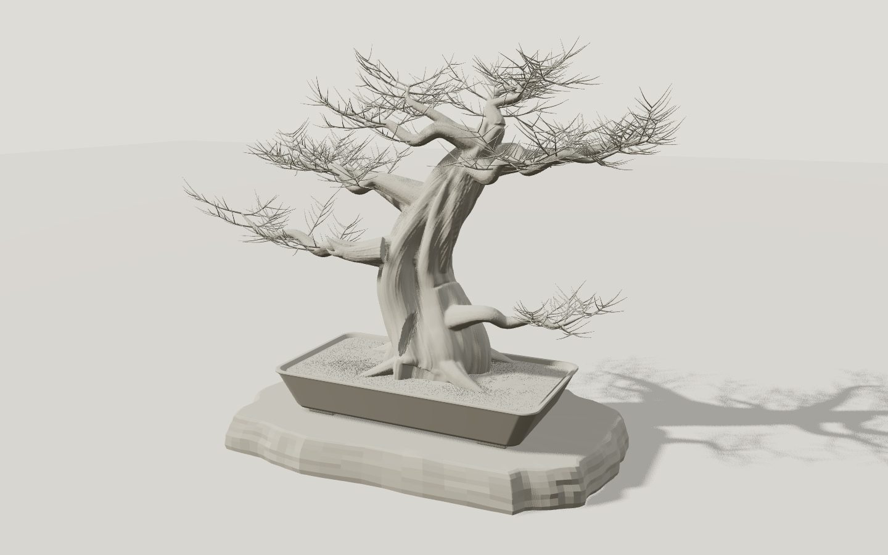
右25度。枝元の境界と幹の面の変化が未達。
代表素材
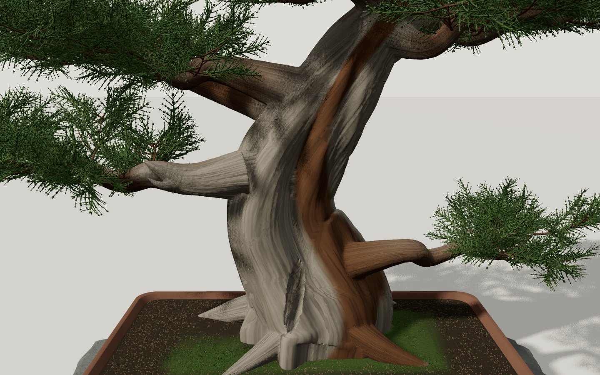
木目・生き筋のシェーダー。まだ均一で人工的な流れが残ります。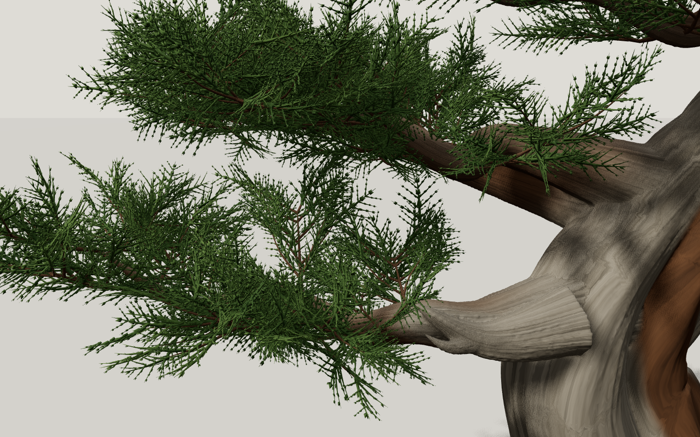
枝に接続した立体の鱗葉。球や平面の葉群ではありませんが、剪定された樹冠としての密度が不足しています。
スマートフォンの別構図
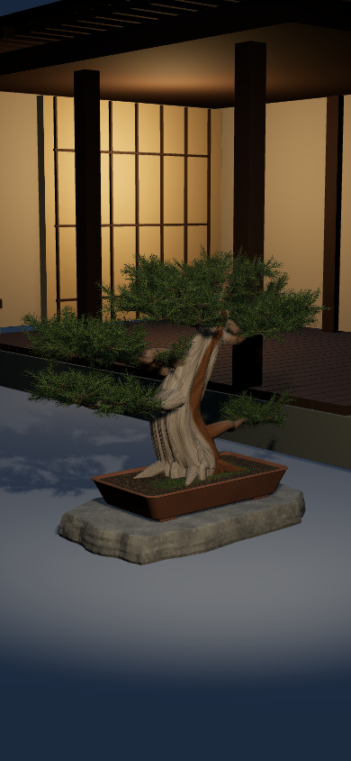
390×844 / 左40度。主役は高さ約42.5%。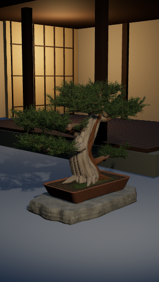
320×568 / 左45度。主役は高さ約52.9%。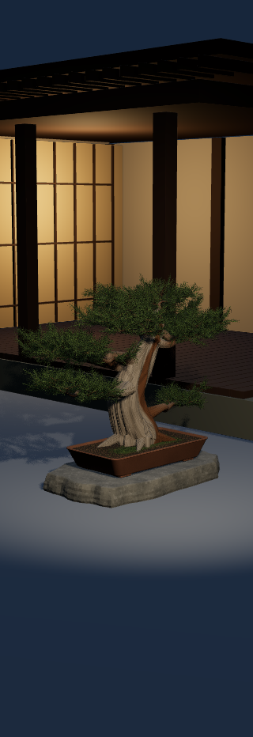
320×932 / 左45度。主役は高さ約32.1%で存在感が弱い。同じ空間内での光の反応
既定の光源。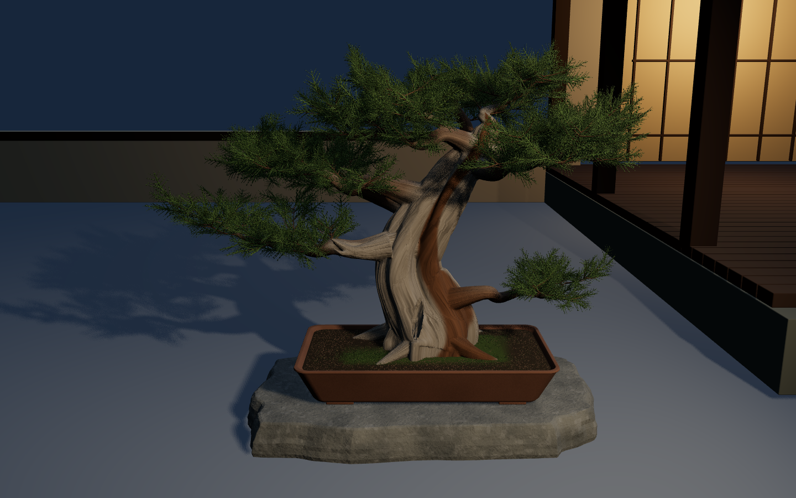
主光源を右側へ移動。幹・鉢・台・地面の陰影と落ちる影が同じ空間で変化します。
機能の36項目成功は外観の完成判定とは分けています。詳細は REPORT.md、生データは ブラウザ検証 と GPU時間 に保存しています。実スマホとSafariは未検証です。